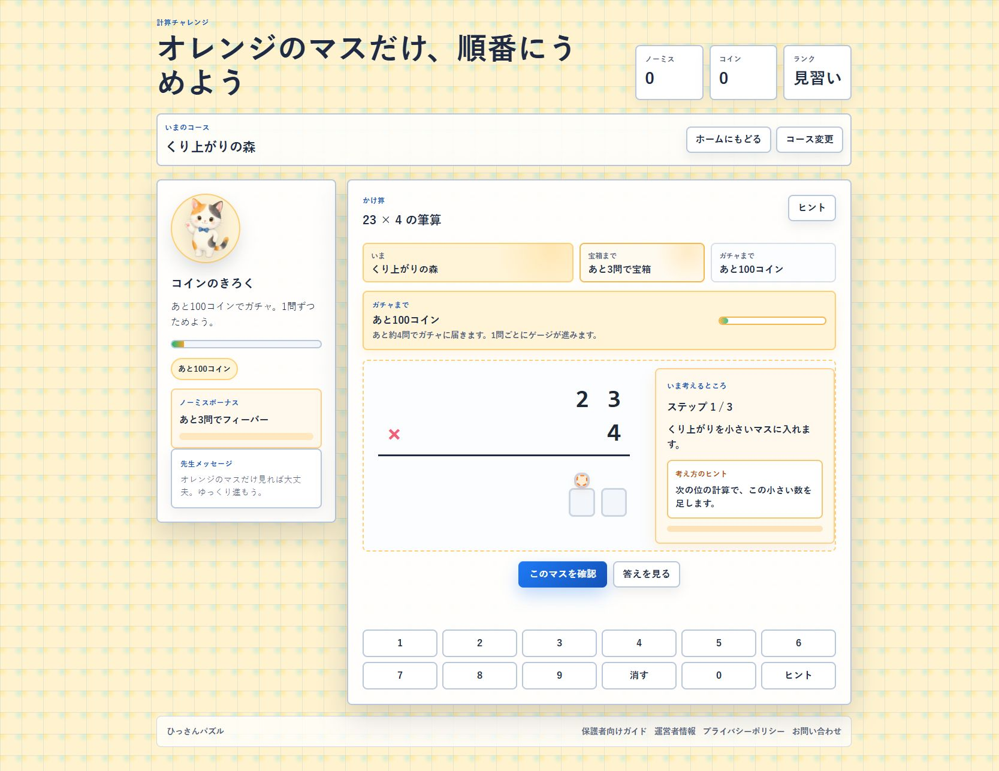

無料の筆算練習
無料の筆算ゲームで、途中の「次はどこ？」を練習しよう。
ひっさんパズルは、掛け算・割り算の答えだけでなく、繰り上がりや途中計算も1マスずつ入力する小学生向けゲームです。無料・登録不要。スマホ、タブレット、PCのブラウザで始められます。
インストールは不要です。学校などの端末では、利用できるサイトの制限に従ってください。
こんな画面で、筆算の途中を練習します

例えば23×4では、3×4＝12の繰り上がり1を残し、一の位に2、十の位に2×4＋1＝9と進めます。次に考える場所を示すので、手順を確かめながら解けます。
練習できる内容
タブレットでの遊び方：まずは1問から
- 上のボタンから練習を選ぶ。
掛け算なら23×4、割り算なら84÷3の例題が直接開きます。続けて別の問題やコースにも進めます。
- オレンジのマスに数字を入れる。
タブレットでは画面の数字ボタン、PCではキーボードも使えます。「このマスを確認」で次の手順へ進みます。
- 迷ったらヒントを見て確かめる。
答えを見ることもできます。見た後は同じ問題への再挑戦で、手順を試せます。
解けるとコインがたまり、ガチャでキャラクターを集められます。ホームには3問ミッションもあります。最初は1問から、お子さんの様子に合わせて使ってください。
家庭で使う前によくある質問
料金や会員登録は必要ですか？
無料で使えます。会員登録やアプリのインストールは必要ありません。
どんな子の練習に向いていますか？
九九を学んでいて、掛け算・割り算の筆算を練習したい小学生を想定しています。九九の確認から始めたい場合は、九九穴埋めを選べます。
学習記録はどこに残りますか？
解いた問題の記録やコインは、その端末のブラウザ内に保存されます。ブラウザのデータを消すと失われ、別の端末とは自動で共有されません。親モードから履歴を確認できます。利用状況の匿名集計についてはプライバシーポリシーをご覧ください。
紙の筆算と併用できますか？
できます。画面で順番を確かめた後、同じ式をノートに書いてみてください。繰り上がりの書く位置などは、学校で習った方法と比べながら使えます。
2026年11月5日更新。作成：ひっさんパズル運営。サイトについて